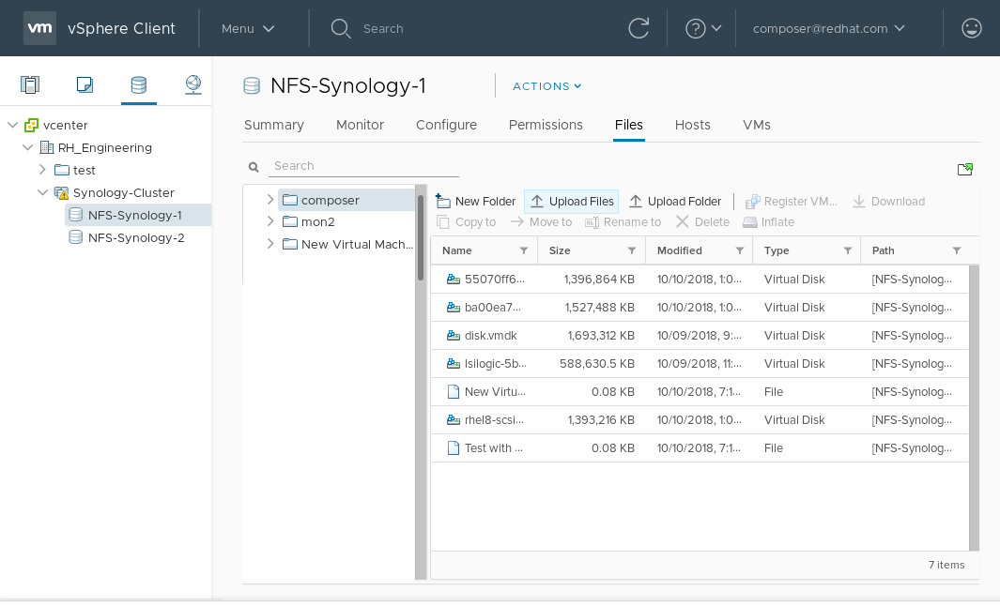

Image Builder can create custom system images ready for use in clouds of various providers. To use your customized RHEL system image in a cloud, create the system image with Image Builder using the respective output type, configure your system for uploading the image, and upload the image to your cloud account.
This describes steps to configure a system for uploading AWS AMI images.
Prerequisites
- You must have an Access Key ID configured in the AWS IAM account manager.
- You must have a writable S3 bucket prepared.
Procedure
Install Python 3 and the
piptool:# yum install python3 # yum install python3-pip
Install the AWS command line tools with
pip:# pip3 install awscli
Configure the AWS command line client according to your AWS access details:
$ aws configure AWS Access Key ID [None]: AWS Secret Access Key [None]: Default region name [None]: Default output format [None]:
Configure the AWS command line client to use your bucket:
$ BUCKET=bucketname $ aws s3 mb s3://$BUCKETReplace bucketname with the actual bucket name.
Create a
vmimportS3 Role in IAM and grant it permissions to access S3, if you have not already done so in the past:$ printf '{ "Version": "2012-10-17", "Statement": [ { "Effect": "Allow", "Principal": { "Service": "vmie.amazonaws.com" }, "Action": "sts:AssumeRole", "Condition": { "StringEquals":{ "sts:Externalid": "vmimport" } } } ] }' > trust-policy.json $ printf '{ "Version":"2012-10-17", "Statement":[ { "Effect":"Allow", "Action":[ "s3:GetBucketLocation", "s3:GetObject", "s3:ListBucket" ], "Resource":[ "arn:aws:s3:::%s", "arn:aws:s3:::%s/*" ] }, { "Effect":"Allow", "Action":[ "ec2:ModifySnapshotAttribute", "ec2:CopySnapshot", "ec2:RegisterImage", "ec2:Describe*" ], "Resource":"*" } ] }' $BUCKET $BUCKET > role-policy.json $ aws iam create-role --role-name vmimport --assume-role-policy-document file://trust-policy.json $ aws iam put-role-policy --role-name vmimport --policy-name vmimport --policy-document file://role-policy.json
This section describes how to upload an AMI image to AWS.
Prerequisites
- Your system must be set up for uploading AWS images.
-
You must have an AWS image created by Image Builder. Use the
amioutput type in CLI or Amazon Machine Image Disk (.ami) in GUI when creating the image.
Procedure
Push the image to S3:
$ AMI=8db1b463-91ee-4fd9-8065-938924398428-disk.ami $ aws s3 cp $AMI s3://$BUCKET Completed 24.2 MiB/4.4 GiB (2.5 MiB/s) with 1 file(s) remaining ...After the upload to S3 ends, import the image as a snapshot into EC2:
$ printf '{ "Description": "my-image", "Format": "raw", "UserBucket": { "S3Bucket": "%s", "S3Key": "%s" } }' $BUCKET $AMI > containers.json $ aws ec2 import-snapshot --disk-container file://containers.jsonReplace my-image with the name of the image.
To track progress of the import, run:
$ aws ec2 describe-import-snapshot-tasks --filters Name=task-state,Values=active
Create an image from the uploaded snapshot by selecting the snapshot in the EC2 console, right clicking on it and selecting
Create Image:
Select the
Virtualizationtype ofHardware-assisted virtualizationin the image you create:
-
Now you can run an instance using whatever mechanism you like (CLI or AWS Console) from the snapshot. Use your private key via SSH to access the resulting EC2 instance. Log in as
ec2-user.
Image Builder can generate images suitable for uploading to a VMware ESXi or vSphere system. This describes steps to upload an VMDK image to VMware vSphere.
Note
Because VMWare deployments typically does not have cloud-init configured to inject user credentials to virtual machines, we must perform that task ourselves on the blueprint.
Prerequisites
-
You must have an VMDK image created by Image Builder. Use the
vmdkoutput type in CLI or VMware Virtual Machine Disk (.vmdk) in GUI when creating the image.
Procedure
Upload the image into vSphere via HTTP. Click on
Upload Filesin the vCenter:
When you create a VM, on the
Device Configuration, delete the defaultNew Hard Diskand use the drop-down to select anExisting Hard Diskdisk image:
Make sure you use an
IDEdevice as theVirtual Device Nodefor the disk you create. The default valueSCSIresults in an unbootable virtual machine.
Image Builder can generate images suitable for uploading to OpenStack cloud deployments, and starting instances there. This describes steps to upload an QCOW2 image to OpenStack.
Prerequisites
You must have an OpenStack-specific image created by Image Builder. Use the
openstackoutput type in CLI or OpenStack Image (.qcow2) in GUI when creating the image.Warning
Image Builder also offers a generic QCOW2 image type output format as
qcow2or QEMU QCOW2 Image (.qcow2). Do not mistake it with the OpenStack image type which is also in the QCOW2 format, but contains further changes specific to OpenStack.
Procedure
Upload the image to OpenStack and start an instance from it. Use the
Imagesinterface to do this:
Start an instance with that image:

-
You can run the instance using any mechanism (CLI or OpenStack web UI) from the snapshot. Use your private key via SSH to access the resulting instance. Log in as
cloud-user.